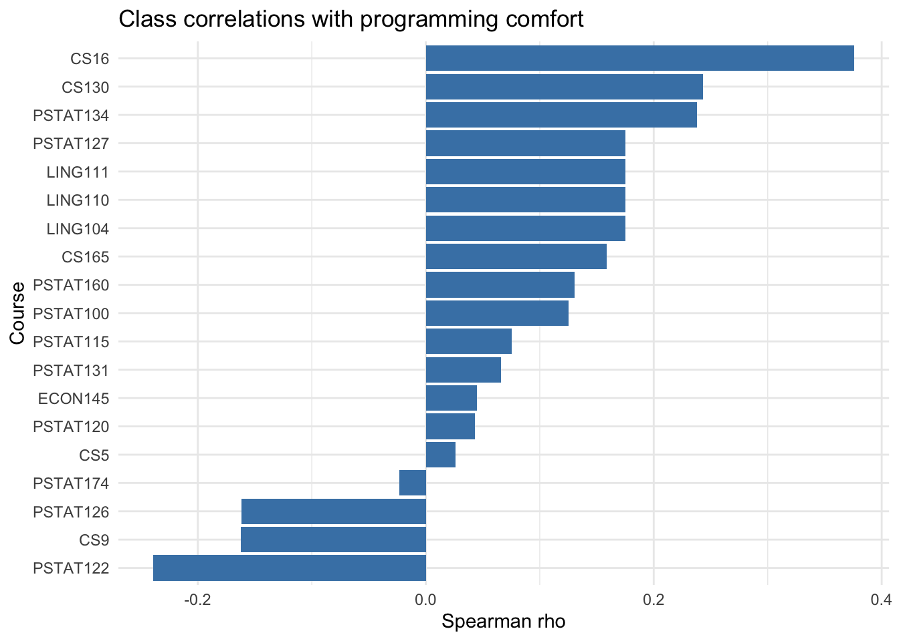
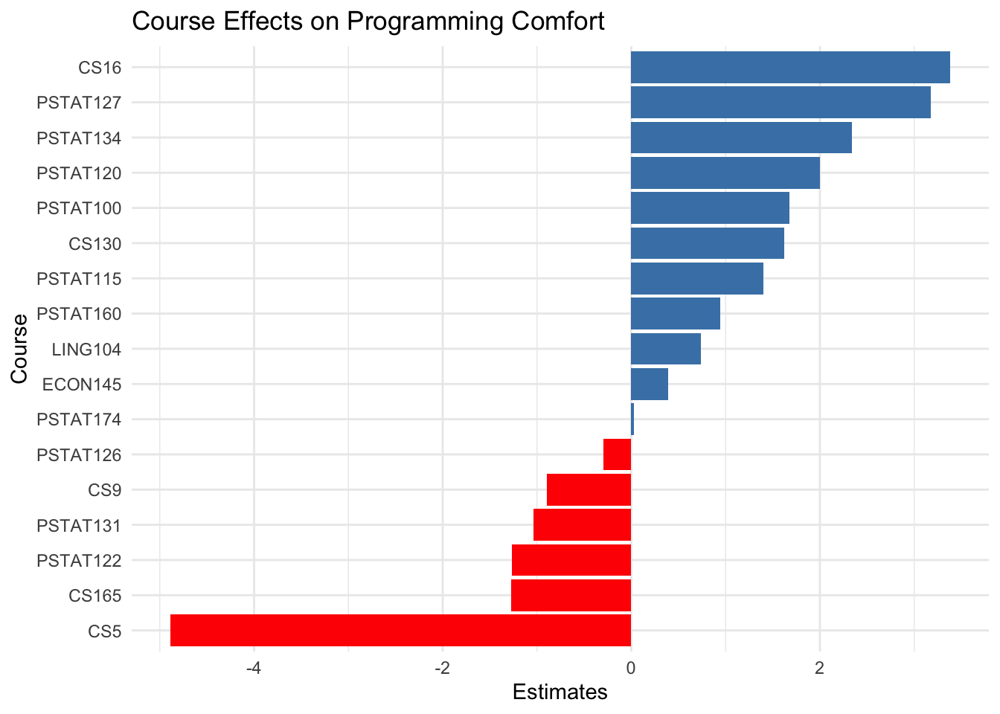

Analysis of class surveys
Which courses are most strongly associated with higher programming comfort among students?
Executive summary
In this project, certain university courses were examined to see how closely associated they are with the students’ comfort in programming of PSTAT197A. Using survey data from 60 students, the relationship between programming comfort levels (rated 1-5) and course enrollment across several departments was analyzed.
Joy’s portion of the analysis used random forest models to identify and rank the courses most strongly correlated with higher programming comfort. The analysis reveals that CS16, PSTAT 160, and PSTAT 122 are the most important predictors overall. Additionally, we find that this ranking of important courses differs significantly based on a student’s prior math proficiency, which will be elaborated in the Findings section.
Lorretta’s and Cathy’s portion of the analysis used ordinal logistic regression to compare comfort levels between students who had taken versus not taken each course. This approach identified the top five courses that are most strongly linked to higher programming comfort. The findings of this portion of the analysis suggest that introductory computer science and advanced data science courses have the strongest positive associations with programming comfort, highlighting their potential role in improving students’ confidence and skill development.
Anna and Johanna used statistical correlation to link course taking to programming comfort. They reported Spearman ρ and mean differences between took and did not take, with bar charts that rank courses and mark significance. Results align with the model based findings that introductory CS and advanced data science courses show the strongest positive associations, while noting these are associations and some courses have small sample sizes.
Data description
The dataset background-clean.csv contains survey responses from 60 university students aimed at understanding factors associated with programming, statistical, and mathematical comfort and proficiency. Data were collected through a self-reported questionnaire that asked participants to rate their comfort and proficiency with programming, statistics, and mathematics on a five point scale, with 1 being least comfortable and 5 being most comfortable. Additional variables recorded include course enrollment indicators across several departments, most notably Computer Science, Statistics, Linguistics, and Economics. Each course variable is coded as a binary variable, with 1 having taken the course and 0 having not taken the course before. This data set allows for comparative and inferential analyses.
Questions of interest
The analysis aimed to identify which courses were most strongly associated with students’ comfort in programming. Specifically, we addressed the following question:
- What are the top five courses that are most correlated with higher self-reported programming comfort among students?
- Does math proficiency influence the ranking of the importance of courses as predictors for programming comfort? (explored using a random forest model)
Findings
Random Forest - Joy
RQ1: Overall Course Importance
First, we fit a model using the entire dataset to identify the courses with the strongest overall association with programming comfort. The “feature importance” score from the model measures the strength of this association. The chart below shows the top 10 most important courses.
It is worth noting that while feature importance reveals the strength of the relationship, it does not show the direction (i.e., whether taking the course is linked to higher or lower comfort). Therefore, the top courses shown below are only the most strongly correlated with programming comfort, but they may correlate with a higher or a lower degree of programming comfort. Despite this shortcoming, the feature importance of the random forest model has an advantage in being able to measure a predictor’s importance holistically, in the context of all other predictors. Unlike a simple correlation, which assesses only the isolated, bivariate linear relationship, the random forest’s non-linear structure accounts for interaction effects. This means the importance score of a course already reflects its conditional value, or how its contribution to programming comfort changes based on the presence or absence of other courses.
The top courses most strongly associated with programming comfort are CS 16, PSTAT 160, PSTAT 122, PSTAT 100, and PSTAT 131, which is reasonable since all of these courses except for 160 are programming-based. It is natural that the students who have taken these courses are more or less comfortable with programming, depending on their performance in and feelings for these courses.
| Course | Importance |
|---|---|
| CS16 | 0.133585 |
| PSTAT160 | 0.108485 |
| PSTAT122 | 0.0963313 |
| PSTAT100 | 0.0855638 |
| PSTAT131 | 0.0854055 |

RQ2: The Influence of Math Proficiency
To determine if the importance of courses changes based on a student’s background, we split the dataset into three groups: those with ‘advanced’ math proficiency, those with ‘intermediate’ proficiency, and those with ‘beginner’ proficiency.
We then ran the Random Forest analysis separately for each group. The subgroup whose math proficiency is ‘beginner’ is too small (n=3) to perform an analysis, so only the ‘advanced’ and ‘intermediate’ groups are kept and analyzed.
The comparison table below clearly shows how the ranking of the importance of courses as predictors for programming comfort changes when we take math proficiency into consideration. We can observe that CS 16, PSTAT 100, PSTAT 122, and PSTAT 160 remain the strongest predictors as in the overall course importance analysis. Their rankings change slightly - for example, PSTAT 100 becomes the most strongly correlated predictor for the group with intermediate math proficiency. Additionally, PSTAT 134, PSTAT 174, and CS 9 are included as the top predictors. These changes can be explained by the different learning paths for each group. For the ‘Math Intermediate’ students, foundational courses like PSTAT 100 and CS 9 are among the top predictors, as these courses establish the statistical and programming logic. Conversely, the ‘Math Advanced’ group, which already has this foundation, is more influenced by specialized, high-level courses like PSTAT 134 and PSTAT 174, although the foundational courses like CS 16 and PSTAT 122 are still highly important to them. This suggests that for advanced students, programming comfort is driven by applying their quantitative skills to more specific problems.
| Rank | Course (adv) | Importance (adv) | Course (int) | Importance (int) |
|---|---|---|---|---|
| 1 | CS16 | 0.157618 | PSTAT100 | 0.144121 |
| 2 | PSTAT122 | 0.0982008 | CS16 | 0.138668 |
| 3 | PSTAT134 | 0.0944759 | CS9 | 0.103457 |
| 4 | PSTAT174 | 0.0862864 | PSTAT122 | 0.0978085 |
| 5 | PSTAT160 | 0.0859582 | PSTAT160 | 0.0905109 |
Statistical Correlation Scores - Anna and Johanna
We computed Spearman correlation, a rank-based statistic that measures how strongly two variables move together in a monotonic pattern. In this context, it shows whether students who took certain courses tend to report higher programming comfort on a scale from 1 to 5.
After converting each course variable into a binary indicator (1 = took, 0 = did not take), we calculated the Spearman correlation between each course and programming comfort while removing any missing responses. The correlations were sorted from highest to lowest to identify which courses were most strongly associated with higher comfort. We then visualized the results in a bar chart to highlight these relationships.
| course | spearman_rho |
|---|---|
| CS16 | 0.376 |
| CS130 | 0.243 |
| PSTAT134 | 0.238 |
| LING104 | 0.175 |
| LING110 | 0.175 |
The results show that CS16, CS130, PSTAT134, PSTAT127, and LING111 are among the courses most positively correlated with programming comfort. This suggests that both introductory computer science courses and upper-division data science or linguistics courses may contribute to greater programming confidence. However, since correlation measures association rather than causation, these results should be interpreted as patterns rather than proof of direct influence.
Logistic Regression - Cathy and Lorretta
We applied the Ordinal Logistics Model, which is also called the Cumulative Link Model, using the clm function. The simple logistics regression model can only be applied to binary data. However, the response variable of programming comfort was recorded as 1 to 5. Thus, the prog.comf was treated as an ordered categorical variable with five levels.
This clm function estimated the log-odds of a student being in a higher comfort category rather than a lower one. The model used a logit link function and maximum-likelihood estimation to obtain coefficient estimates for each course and threshold cut-points separating the ordered categories. Positive coefficients indicated courses associated with greater odds of higher programming comfort, while negative coefficients indicate courses associated with lower comfort levels. After that, the estimates of all courses were ranked from the highest to the lowest.
# Make sure outcome is ordered factor
logistics <- logistics %>%
mutate(prog.comf = ordered(prog.comf, levels = c(1, 2, 3, 4, 5)))
# Use all courses (keep everything)
predictors <- c("PSTAT100","PSTAT115","PSTAT120","PSTAT122","PSTAT126","PSTAT131",
"PSTAT160","PSTAT174","CS9","CS16","LING104","LING110","LING111",
"CS130","CS165","ECON145","PSTAT127","PSTAT134","CS5")
# Keep only outcome + predictors, drop missing rows
logistics <- logistics %>%
dplyr::select(prog.comf, all_of(predictors)) %>%
drop_na()
# Fit Ordinal Logistic Model
formula <- as.formula(paste("prog.comf ~", paste(predictors, collapse = " + ")))
model_clm <- clm(formula, data = logistics, link = "logit")
summary(model_clm)formula:
prog.comf ~ PSTAT100 + PSTAT115 + PSTAT120 + PSTAT122 + PSTAT126 + PSTAT131 + PSTAT160 + PSTAT174 + CS9 + CS16 + LING104 + LING110 + LING111 + CS130 + CS165 + ECON145 + PSTAT127 + PSTAT134 + CS5
data: logistics
link threshold nobs logLik AIC niter max.grad cond.H
logit flexible 51 -39.92 119.84 7(0) 7.76e-12 6.5e+02
Coefficients: (2 not defined because of singularities)
Estimate Std. Error z value Pr(>|z|)
PSTAT100 1.67441 0.84293 1.986 0.046987 *
PSTAT115 1.39744 1.01313 1.379 0.167791
PSTAT120 2.00222 1.42098 1.409 0.158821
PSTAT122 -1.26229 0.89923 -1.404 0.160393
PSTAT126 -0.29448 1.31385 -0.224 0.822652
PSTAT131 -1.03511 0.86471 -1.197 0.231285
PSTAT160 0.93949 0.76747 1.224 0.220898
PSTAT174 0.02816 0.89525 0.031 0.974908
CS9 -0.89552 0.84705 -1.057 0.290411
CS16 3.38134 0.92453 3.657 0.000255 ***
LING104 0.73543 2.55461 0.288 0.773435
LING110 NA NA NA NA
LING111 NA NA NA NA
CS130 1.61892 1.60306 1.010 0.312547
CS165 -1.27023 1.80494 -0.704 0.481588
ECON145 0.39273 1.97860 0.198 0.842662
PSTAT127 3.17262 2.56362 1.238 0.215880
PSTAT134 2.34159 1.47137 1.591 0.111511
CS5 -4.88479 2.06484 -2.366 0.017996 *
---
Signif. codes: 0 '***' 0.001 '**' 0.01 '*' 0.05 '.' 0.1 ' ' 1
Threshold coefficients:
Estimate Std. Error z value
2|3 -2.952 2.088 -1.414
3|4 1.413 1.947 0.725
4|5 4.927 2.072 2.378# Rank Step
coefs <- summary(model_clm)$coefficients
# Remove threshold rows like "1|2", "2|3", etc.
coefs <- coefs[!grepl("\\|", rownames(coefs)), , drop = FALSE]
# Create a simple ranked table
ranked_courses <- data.frame(
Course = rownames(coefs),
Estimate = coefs[, "Estimate"],
StdError = coefs[, "Std. Error"]
)
# Sort by absolute coefficient (strongest effects first)
ranked_courses <- ranked_courses[order(ranked_courses$Estimate, decreasing = TRUE), ]
# Print results
print(ranked_courses) Course Estimate StdError
CS16 CS16 3.38133839 0.9245291
PSTAT127 PSTAT127 3.17262059 2.5636153
PSTAT134 PSTAT134 2.34159040 1.4713673
PSTAT120 PSTAT120 2.00222279 1.4209752
PSTAT100 PSTAT100 1.67440989 0.8429296
CS130 CS130 1.61892200 1.6030645
PSTAT115 PSTAT115 1.39744115 1.0131255
PSTAT160 PSTAT160 0.93949191 0.7674690
LING104 LING104 0.73543145 2.5546093
ECON145 ECON145 0.39273228 1.9785975
PSTAT174 PSTAT174 0.02815919 0.8952535
PSTAT126 PSTAT126 -0.29448020 1.3138487
CS9 CS9 -0.89551792 0.8470495
PSTAT131 PSTAT131 -1.03510544 0.8647102
PSTAT122 PSTAT122 -1.26229215 0.8992269
CS165 CS165 -1.27023123 1.8049433
CS5 CS5 -4.88479278 2.0648351
LING110 LING110 NA NA
LING111 LING111 NA NA| Course | Estimate | StdError |
|---|---|---|
| CS16 | 3.381 | 0.925 |
| PSTAT127 | 3.173 | 2.564 |
| PSTAT134 | 2.342 | 1.471 |
| PSTAT120 | 2.002 | 1.421 |
| PSTAT100 | 1.674 | 0.843 |

According to the figure and table, the top five courses that mostly correlated to the programming comfort were CS 16, PSTAT 127, PSTAT 134, PSTAT 120, and PSTAT 100.
In particular, CS16 and PSTAT127 emerged as the most influential predictors with estimates of 3.381 and 3.176 respectively. It suggests that foundational computer science and data science
Using ordinal logistics regression, course enrollment patterns were examined to test how they may affect students’ self-reported programming comfort on a 1-5 scale. Among all courses, it appears CS 16, PSTAT 127, PSTAT 134, PSTAT 120, and PSTAT 100. This suggests that students that complete these courses are substantially more likely to report higher comfort levels in programming.
Conclusion
Across random forest, ordinal logistic regression, and Spearman correlation, the results agree that introductory computer science and advanced statistics or data science courses are most strongly associated with higher programming comfort, with CS16 appearing near the top in every approach and courses such as PSTAT122, PSTAT127, PSTAT134, and PSTAT160 also showing strong positive links. Differences in exact rankings are because random forests emphasize joint predictive power and capture nonlinear interactions, ordinal logistic regression estimates each course’s directional effect while adjusting for the others, and Spearman correlation reports the simple pairwise association between a single course and comfort. Viewed together, these complementary lenses point to the same takeaway that foundational programming and applied data courses are key experiences linked to greater confidence in programming.